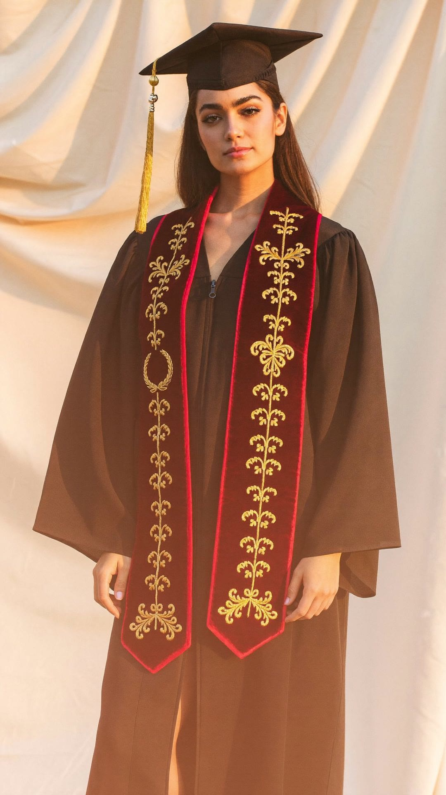

يوم واحد بالعمر
واسمك عليهمطرّز بالخيط
٢٬٠١٧ طالب وطالبة سجّلوا معنا
بالخط العربيمو طباعة تنمسح
إحنا اللي نفصّل ونطرّز، مو وسيط يشتري ويبيع
نخيطه بورشتنابديالى
ما تدفع ولا دينار هسه
الدفع نقداًعند التسليم

٩:٤١
حمّل تطبيق لولو شوب

دوّر على «لولو شوب» بمتجر التطبيقات
Download onApp Store
Get it onGoogle Play
@lolo_shop96 · lolo-shop96.com